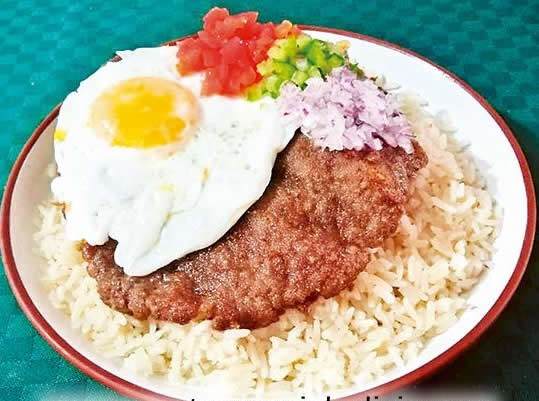
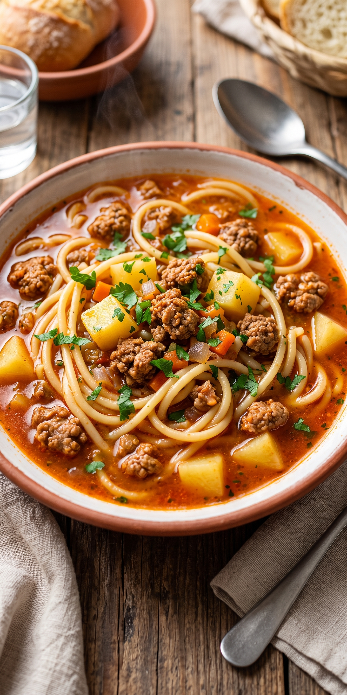

Menú

Locro Sencillo
Bs 5Locro sensillo caldo de arroz y verduras

Locro con Presa
Bs 10Locro acompañado de una presa de gallina criolla.

Silpancho
Bs 14Filete de carne apanada, arroz, papa cocida, ensalada fresca y huevo frito.

Ají de Lengua
Bs 15Lengua de res cocida en ají rojo, acompañada de arroz, fideo, papa y chuño.

Guiso de Fideo
Bs 9Fideos guisados con carne y verduras sazonados con especias tradicionales.,

Picante de Pollo
Bs 13Pollo cocido en aji rojo, acompañado de arroz, fideo, papa y chuño.

Falso Conejo
Bs 13Carne de res en salsa de ají amarillo sin picante, servida con arroz y papa y fideo.

Asado en Olla
Bs 13Carne suave cocida lentamente en su jugo, acompañada de arroz, papa y fideo.

Majadito Batido
Bs 10Arroz batido con charque o carne, acompañado de huevo y plátano frito.

Broaster Pierna
Bs 13Pollo a la broaster presa pierna, acompañada de papas fritas, Arroz y fideo espagueti.

Broaster Contra
Bs 13Pollo a la broaster presa contra Pierna, acompañada de papas fritas, Arroz y fideo espagueti.

Broaster Ala
Bs 14Pollo a la broaster presa ala, acompañada de papas fritas, Arroz y fideo espagueti.

Broaster Pecho
Bs 14Pollo a la broaster presa pechuga, acompañada de papas fritas, Arroz y fideo espagueti.